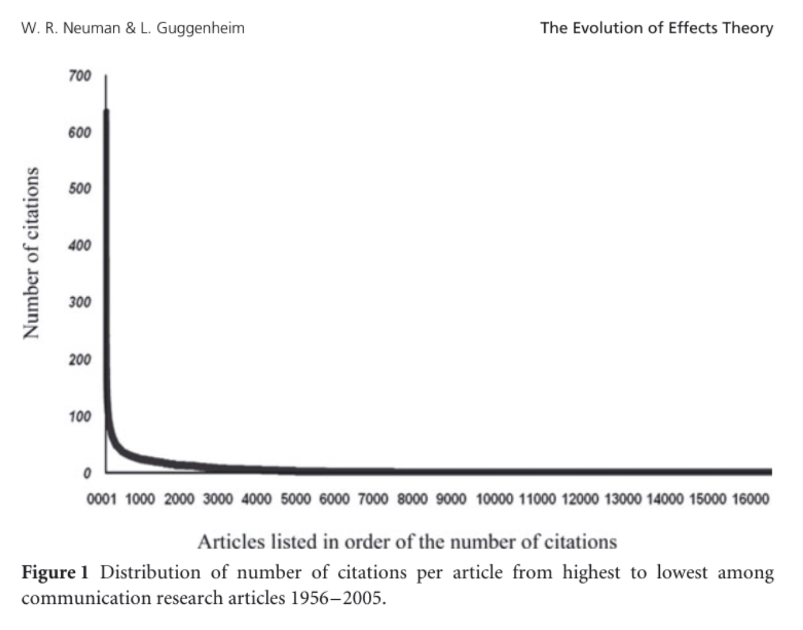
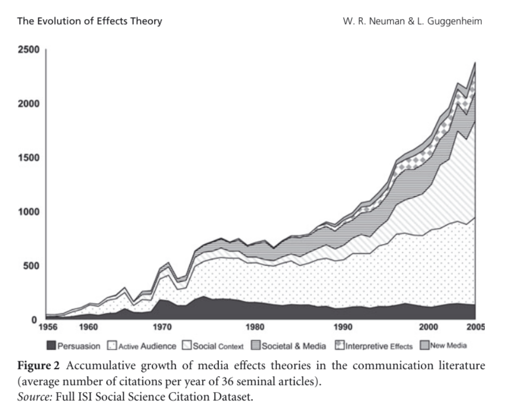
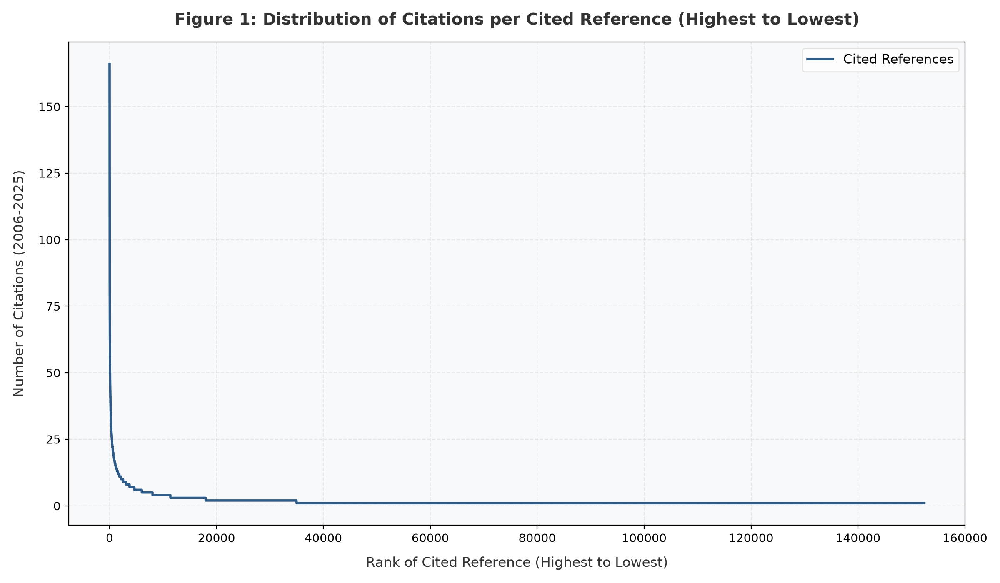

日本メディア学会2026年度春季大会・理論部会ワークショップ報告資料
報告者：慶應義塾大学文学部 李 光鎬（イー・ゴアンホ）
報告日：2026年6月28日
場所：武蔵大学
Neuman & Guggenheim (2011). The Evolution of Media Effects Theory: A Six-Stage Model of Cumulative Research. Communication Theory 21(2), 169-196.
メディア効果の研究史は、しばしば「強力効果」→「限定効果」→「強力効果の復活」という3段階モデルで語られてきた。しかし、この劇的でロマンチックな単純化は、理論の累積的な発展を見えなくする弊害を持つ。
彼らは、50年分の引用データを実証的に分析し、古い理論を単に否定するのではなく、新しい条件や文脈を付け加えながら累積的に発展してきたという「6段階モデル」を提示する。
各段階は以前の理論を否定するのではなく、新たな「理論的洗練」を付け加えている。
| 歴史的ステージ | 理論的洗練（焦点の移動） | 代表的な理論例 |
|---|---|---|
| I. Persuasion Theories (説得理論 1944–1963) |
単純な態度変容と行動モデリング | 投票研究、説得・態度変容 (Hovland), 社会的学习 (Bandura) |
| II. Active Audience Theories (能動的オーディエンス理論 1944–1986) |
動機づけられた注意 | 利用と満足、パラソーシャル相互作用、認知的不協和、選択的接触、ELM (Petty & Cacioppo) |
| III. Social Context Theories (社会的文脈理論 1955–1983) |
コミュニケーションの対人的な文脈 | 2段階の流れ (Katz & Lazarsfeld), イノベーション普及、知識ギャップ、沈黙の螺旋、第三者効果 |
| IV. Societal & Media Theories (社会・メディア理論 1933–1978) |
長期的な効果の蓄積 | ヘゲモニー/公共圏 (Habermas), メディアの特性 (McLuhan), 培養理論 (Gerbner) |
| V. Interpretive Effects Theories (認知的効果理論 1972–1987) |
態度変容を超えて：顕著性、アクセス容易性 | 議題設定 (McCombs & Shaw), プライミング、フレーミング (Iyengar) |
| VI. New Media Theories (ニューメディア理論 1996–) |
双方向コミュニケーション、ネットワーク化 | コンピュータ媒介コミュニケーション (CMC) (Walther) |
※ 表をスクロールして全てのステージを確認できます

意味: 20,736本中、約60%の論文は一度も引用されていない。一方で、上位1%のトップ200論文が全引用の38%を集めている。
科学の世界では「持せる者はますます豊かになる」というマタイ効果（The Matthew Effect）が極めて顕著に表れている。

意味: 3段階モデルのように「古い理論が衰退し新しい理論に取って代わられる」という現象は起きていない。
初期の「説得」などの理論でさえ安定した引用を保っており、新しい理論（認知的効果やニューメディア論など）がそれに上乗せされる形（累積的成長）でメディア効果研究が発展していることを示している。
分析対象データ： 主要6ジャーナルにおける最近20年間の引用パターン
👉 各年代の被引用数トップ20論文リストはこちら（別タブで開きます）
総収録論文数：
4,846 本
抽出された引用文献総数：
258,393
件
（同一文献を名寄せ・集計した結果のユニーク文献数：134,623件）
2006年以降も、2005年までと同じように、各ステージの主要論文が引き続き引用され続けている。
アジェンダセッティングや、フレーミングなどの理論の影響力は衰えていない。（図2で見られた累積の傾向は現在も継続）
代表的な継続引用文献：
McCombs, M. E., & Shaw, D. L. (1972). The agenda-setting function of mass media. Public opinion quarterly, 36(2), 176-187.
Entman, R. M. (1993). Framing: Toward clarification of a fractured paradigm. Journal of communication, 43(4), 51-58.
Top20の引用データを精査した結果、2006-2025年においては
「第7のステージ」および「第8のステージ」が明確に追加・分離されていることが分かった。
（分極化と選択的接触）
（AIと人間の相互作用）
第7ステージの代表的な文献：
Iyengar, S., & Hahn, K. S. (2009). Red media, blue media: Evidence of ideological selectivity in media use. Journal of communication, 59(1), 19-39.
Flaxman, S., Goel, S., & Rao, J. M. (2016). Filter bubbles, echo chambers, and online news consumption. Public opinion quarterly, 80(S1), 298-320.
第8ステージの代表的な文献：
Ho, A., Hancock, J., & Miner, A. S. (2018). Psychological, relational, and emotional effects of self-disclosure after conversations with a chatbot. Journal of Communication, 68(4), 712-733.
Sundar, S. S. (2020). Rise of machine agency: A framework for studying the psychology of human–AI interaction (HAII). Journal of computer-mediated communication, 25(1), 74-88.
データ： 2006-2025年のSSCI収録論文における、各ステージ代表論文の「1本あたりの平均被引用数」。
新しいステージ（VIII）が加わりつつ、既存ステージも累積的な層を形成していることがわかる。
データ： 今回対象とした主要6ジャーナルにおける、各ステージ代表論文の「1本あたりの平均被引用数」。
※SSCI全体と正確に比較するため、こちらもステージ内の論文数で割った平均値に統一した。
データ： 6ジャーナル内における全被引用数のうち、各ステージが占める「割合（％）」の推移。
絶対数ではなく割合で見ると、第2ステージ（能動的オーディエンス等）が安定した基盤を保つ中で、第7・第8ステージ（分極化やAI等）が着実にシェアを拡大している様子が浮き彫りになる。
2006-2025年においても、引用の「マタイ効果」は継続している。
図1と同じく、ごく一部の論文に莫大な数の引用が集中している。

グラフの元データ： コア6誌（2006〜2025年）の掲載論文 4,846本 が参照した、全ユニーク文献（134,623件）の引用頻度分布。SSCI全体ではなく、「6誌の中で特定の過去文献がいかに偏って引用されているか」を示している。
現在のTop30の論文を精査すると、Hu & Bentler (1999) や Hayes (2017)
のような「統計手法・プロセス分析」の論文が最上位を占めている。
しかし、これらを除外して「理論的テーマ」で整理すると、現代のメディア効果研究が何に焦点を当てているかが浮かび上がる。
| テーマ群 | 代表的な論文（著者） | 特徴 |
|---|---|---|
| 分極化・選択的接触・党派性 （第7ステージ関連） |
Iyengar & Hahn (2009), Taber & Lodge (2006), Zaller (1992), Stroud (2011), Mutz (2006) | 現代の政治コミュニケーションにおける最も有力なトレンド。 |
| 古典的理論の維持・再評価 （第1〜第5ステージ） |
Entman (1993), McCombs & Shaw (1972), Bennett & Iyengar (2008), Gans (1979) | フレーミングや議題設定効果がデジタル時代にも基盤として引用される。 |
| 情報処理・心理的メカニズム （第2ステージ関連） |
Green et al. (2000), Lang (2000), Petty et al. (1983), Slater (2007) | 説得やメッセージ処理（ELM、ナラティブ説得、強化スパイラル）のメカニズム。 |
| デジタル環境・ネットワーク （第6ステージ関連） |
Walther (1996), Granovetter (1973), Ellison et al. (2007) | CMC、SNSにおける社会関係資本や弱い紐帯。 |
現代のメディア効果研究は、単に「メディアが人にどのような影響を与えるか」という一方向的な刺激⇒反応モデルを脱し、ユーザーの能動性、心理的プロセス、そして長期的な動態を統合した包括的な枠組みへと再考されている。（Valkenburg, Peter, & Walther, 2016; Vorderer, Park, & Lutz, 2020）。
従来の単純な接触度合いの指標から、技術的属性やユーザーの主観的認識を考慮する方向へ
メディア接触がどのように従属変数へつながるか、その心理的・社会的プロセスの解明が求められている。
効果は一過性の態度変容だけでなく、長期的な態度の維持や心理的な「繁栄」など、多角的に捉えられる。
「利用→メカニズム→効果」という一方向の流れは、「効果が次の利用を規定する」という循環的なプロセスへと再考されている。
⟲ 強化スパイラル: 効果(従属変数)が次のメディア選択(独立変数)をさらに規定する
⟲ 自己効果 (Self-Effects): 発信者自身の態度がフィードバックを通じて強化される
Baumgartner, S. E. (2025). On the stabilization of media effects after repeated exposure: Consequences for media effects research. Communication Theory, 2025(00), 1–13.
Bryant, J., & Miron, D. (2004). Theory and research in mass communication. Journal of communication, 54(4), 662-704.
de Leeuw, R. N. H., & Buijzen, M. (2016). Introducing positive media psychology to the field of children, adolescents, and media. Journal of Children and Media, 10(1), 39–46.
Dylko, I., & McCluskey, M. (2012). Media effects in an era of rapid technological transformation: A case of user-generated content and political participation. Communication Theory, 22(3), 250–278.
Entman, R. M. (1993). Framing: Toward clarification of a fractured paradigm. Journal of communication, 43(4), 51-58.
Flaxman, S., Goel, S., & Rao, J. M. (2016). Filter bubbles, echo chambers, and online news consumption. Public opinion quarterly, 80(S1), 298-320.
Hayes, A. F. (2017). Introduction to mediation, moderation, and conditional process analysis: A regression-based approach. Guilford publications.
Hu, L. T., & Bentler, P. M. (1999). Cutoff criteria for fit indexes in covariance structure analysis: Conventional criteria versus new alternatives. Structural equation modeling: a multidisciplinary journal, 6(1), 1-55.
Iyengar, S., & Hahn, K. S. (2009). Red media, blue media: Evidence of ideological selectivity in media use. Journal of communication, 59(1), 19-39.
McCombs, M. E., & Shaw, D. L. (1972). The agenda-setting function of mass media. Public opinion quarterly, 36(2), 176-187.
Nabi, R. L., & Krcmar, M. (2004). Conceptualizing media enjoyment as attitude: Implications for mass media effects research. Communication Theory, 14(4), 288–310.
Neuman, W. R., & Guggenheim, L. (2011). The evolution of media effects theory: A six-stage model of cumulative research. Communication theory, 21(2), 169-196.
Post, S. (2019). Polarizing communication as media effects on antagonists: Understanding communication in conflicts in digital media societies. Communication Theory, 29(2), 213–235.
Raney, A. A., & Bryant, J. (2020). Entertainment and enjoyment as media effect. In M. B. Oliver, A. A. Raney, & J. Bryant (Eds.), Media effects: Advances in theory and research (4th ed., pp. 317–338). Routledge.
Slater, M. D. (2007). Reinforcing spirals: The mutual influence of media selectivity and media effects and their impact on individual behavior and social identity. Communication Theory, 17(3), 281–303.
Stroud, N. J. (2010). Polarization and partisan selective exposure. Journal of communication, 60(3), 556-576.
Valkenburg, P. M., & Oliver, M. B. (2020). Media effects theories: An overview. In M. B. Oliver, A. A. Raney, & J. Bryant (Eds.), Media effects: Advances in theory and research (4th ed., pp. 11–35). Routledge.
Valkenburg, P. M., & Peter, J. (2013). Five challenges for the future of media-effects research. International Journal of Communication, 7, 197–215.
Valkenburg, P. M., Peter, J., & Walther, J. B. (2016). Media effects: Theory and research. Annual Review of Psychology, 67, 315–338.
Vorderer, P., Park, D. W., & Lutz, S. (2020). A history of media effects research traditions. In M. B. Oliver, A. A. Raney, & J. Bryant (Eds.), Media effects: Advances in theory and research (4th ed., pp. 1–10). Routledge.
Wolfers, L. N. (2024). A social constructivist viewpoint of media effects: Extending the social influence model of technology use to media effects. Communication Theory, 34(4), 178–190.